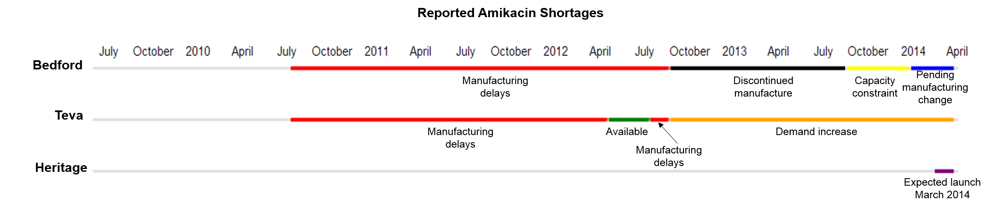
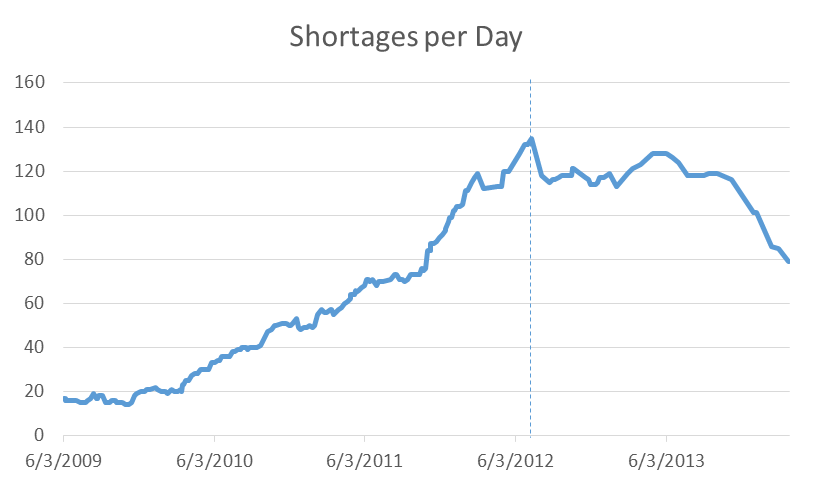
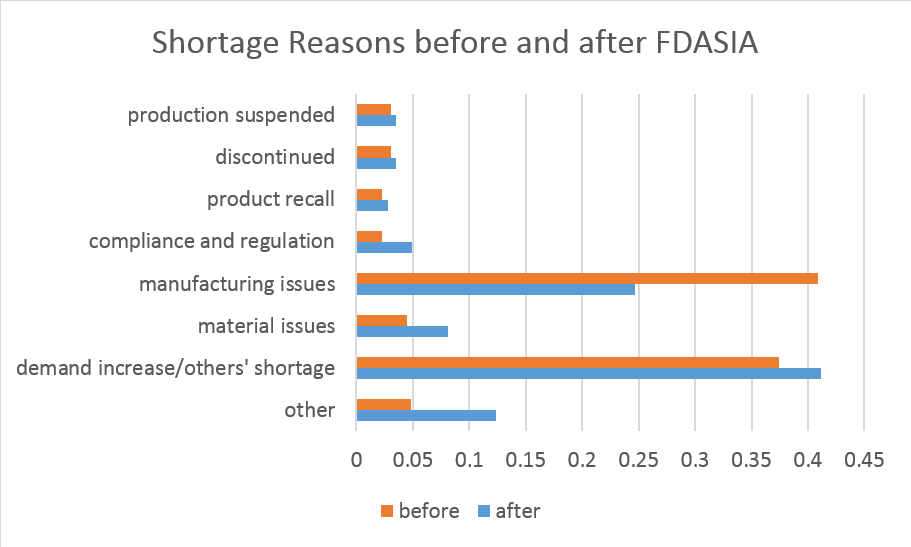

When bacteria prove too smart for normal antibiotics, doctors call the drug amikacin in as a last resort. The injectable drug is often patients' last hope when they're infected by hospital bacteria - which have gained resistance to most everything as they've survived the hospital halls - or drug-resistant tuberculosis. When a patient needs amikacin, it's often difficult to find a substitute - but there's been too little to support the country's need since 2010.
It started with manufacturing delays. Or at least, that's what the two manufacturers, Bedford Laboratories and Teva Pharmaceuticals, reported to the Food and Drug Administration, and that's what appeared under “Amikacin” on their drug shortages website. In actuality, it was a combination of circumstances – Hospira, another company, had discontinued making the drug after a raw material shortage in May, and Teva had been having manufacturing delays for months already. Bedford running into manufacturing issues was just the final straw. And there have been shortages right up until the present day, with companies citing capacity constraints and manufacturing changes as the demand for the drug ramped up.
Each reason built on the others until amikacin was trapped in a cycle of too much demand for too little supply - and matters became even worse when one of Bedford's manufacturing plants began recalling its tainted products and - after almost two years of issues - shutting down altogether. The shortage continues to this day, but is lessened somewhat by a third company, Heritage Pharmaceuticals, beginning manufacture as it ventures into creating injectable drugs.
Amikacin is one of over 200 drugs whose shortages have appeared on FDA's site - drugs that are often essential and hard to replace.
~*~
The color-changing bar on the left represents the number of drug shortages on a given day archived from FDA's website - the darker the color, the greater the shortage. The white coloring, at the top, was 17 drugs with a shortage in June 2009, and we've worked our way up to 2010 with almost 50 drugs.
~*~
On July 9, 2012, FDA took action to try and reduce dangerous, long-lasting shortages like the one that affected amikacin. Their plan, FDA Safety and Innovation Act, gave them the power to help lessen shortages and required companies to report earlier and in more detail.
Diving into FDA site's archived pages, we can investigate what effect the law is having on shortages.
First off, the basics. Here's the number of reported drug shortages, and the dotted line is when FDASIA took effect.
...................................
While the number of drug shortages didn't decrease, the durations did - from 416 days on average to 353. It makes sense: the law required companies to report shortages more often, in the hopes that they could be combated faster.
The reasons behind the shortages changed somewhat as well - represented here in proportions of each reported reason.
...................................
Shortly before the law came out, a House Committee Report revealed that many drug shortages were FDA's fault - manufacturing issues would lead to manufacturers being required legally to shut down production, even if no other companies could pick up the slack. Manufacturing issues caused a much lower proportion of shortages after the law took effect - the issues happened, but they didn't cause a shortage because manufacturers worked with FDA to still put out product. FDA worked with Ben Venue, for instance, to help it keep producing drugs even when having continuing manufacturing issues.
On Halloween of 2013, FDA put out another strategic plan dealing with drug shortages with more plans of action for shortage situations and requiring even more companies to report shortages. Only time will tell whether it has an effect - and only by keeping an eye on the data will it be revealed. The industry will continue to grapple with long-running shortages like amikacin's, but hopefully new shortages will be nipped in the bud.
The actions FDA takes now could just stave off those new drug shortages for good.
Drug shortage changes before and after FDASIA is only one of many trends to be found in FDA's drug shortage data, if only it can be sorted through correctly. Cycles of companies running into shortages, seasonal shortage trends, and trends for particular types of drugs can all be found more easily when tracked through time. Below is a chart documenting the shortages reported by each company about each drug - by hovering over the shortage, one can see the lengths of shortage and the reasons given.
To search for trends, it's possible to filter the chart by company, drug, reasons for shortage, or type (i.e. pediatric, cardiovascular...). The data was difficult to pull from FDA's site and is still being cleaned, so there may be small inaccuracies that will disappear over time as everything is verified. The color cues may help identify shortage reason patterns.
Thanks for reading!